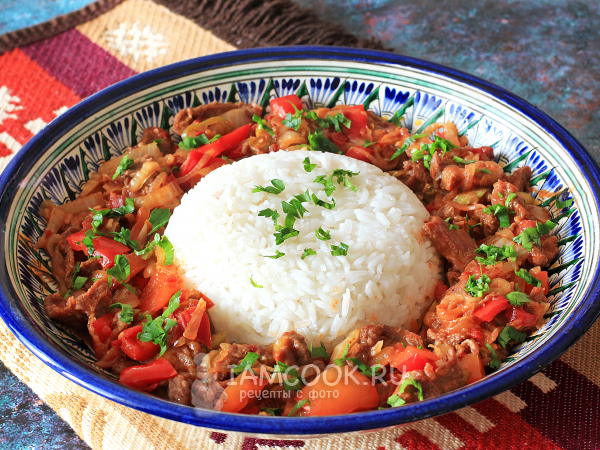

Guiro Ganfan Recipe
Ingredients:
- Beef or lamb - 500 g
- Rice - 300 g
- Carrots - 2 pcs
- Onions - 2 pcs
- Garlic - 4 cloves
- Bell pepper - 1 pc
- Vegetable oil - for frying
- Salt, pepper - to taste
- Cumin (zira) - 1 tsp
- Broth or water - 500 ml
Method:
- Preparing the meat: Cut the meat into small pieces. Fry in a deep frying pan or cauldron with vegetable oil until golden brown.
- Adding vegetables: Add chopped onions, carrots, bell pepper, and garlic. Fry everything together until the vegetables are soft.
- Cooking the rice: Add the rice, cumin, salt, and pepper to the meat and vegetables. Pour in the broth or water. Simmer covered on low heat until the rice is cooked.
- Serving: Serve the dish hot, garnished with herbs and lemon wedges if desired.